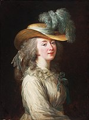

Luís XV levou a cabo uma dura campanha de perseguição aos protestantes quando iniciou o seu governo. A política religiosa
do rei provocou a oposição do Parlement de Paris, que obteve a dissolu- ção da Companhia de Jesus (1764) mas, por outro lado,
fracassou em realizar reformas.
O monarca não soube gerir simultaneamente com sucesso estes dois assuntos, dado que perdeu quase todos os territórios ultramarinos
no Tratado de Paris, conseguindo no entanto fazer uma a- liança com os Habsburgos contra a Prússia.O duque de Choiseul tentou restaurar
a ordem, procu- rando soluções para os danos causados pela Guerra dos Sete Anos.
Esposas e Amantes

Após a Guerra da Quádrupla Aliança, França e Espanha decidiram reconciliar-se mediante a um casamento entre o jovem rei Luís XV e a infanta
Mariana Vitória, filha do rei Filipe V de Espanha.
Posteriormente Luís XV casou-se com Maria Leszczyńska, filha de Estanislau I Leszczyński, rei deposto da Polónia. A irmã de Mariana Vitória,
a infanta Maria Teresa Rafaela, casou-se com o filho de Luís XV em 1745 para tranquilizar a insultada corte espanhola.
Jeanne-Antoinette Poisson, com a ajuda de seus amigos, ela conseguiu participar do baile organizado para comemorar o casamento do delfim e, nessa ocasião,
conheceu Luís XV, que a tornou sua amante. Depois de comprar o título de Marquesa de Pompadour, Jeanne-Antoinette foi reconhecida como maîtresse-en-titre
(Amante oficial). Madame de Pompadour teve considerável influência nas artes, moda, teatro e música, ditando o estilo da primeira metade do século XVIII;
em um nível filosófico, ela apoiava as ideias do iluminismo.